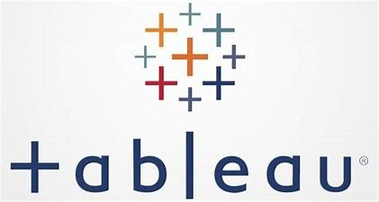

Data Cleaning in SQL
Used Microsoft SQL Server to organize and clean a Nashville housing dataset — applying normalization, deduplication, null handling, and column standardization to make it analysis-ready.
View ProjectHi, I'm
I bridge the gap between technical data solutions and business outcomes — skilled across the full analytics stack from SQL and Python to Power BI, Tableau, and custom web apps.
I'm a Data Analyst at Maxwell Locke & Ritter, an accounting and advisory firm in Austin, Texas. I studied Technology Management at Texas A&M University and have built a career at the intersection of data analytics and full-stack software development.
In my current role I build and maintain the firm's internal reporting platform — a full-stack ASP.NET Core web application that consolidates reporting across Tax, Audit, and Transaction Advisory. I co-own executive-level Power BI dashboards alongside the CTO and regularly ship features like automated report delivery, custom workflow trackers, and data export tools. Before MLR, I was a Data Analyst at Travis County where I launched 10 Power BI dashboards that replaced 30 legacy SSRS reports and helped stand up the county's first comprehensive data warehouse.
I hold IBM Data Science and Python certifications and am always looking for new ways to turn raw data into decisions.
Used Microsoft SQL Server to organize and clean a Nashville housing dataset — applying normalization, deduplication, null handling, and column standardization to make it analysis-ready.
View ProjectCollected and analyzed a global COVID-19 dataset using Microsoft SQL Server and Excel, exploring infection rates, death counts, and vaccination rollout trends across countries.
View Project
Built an interactive Tableau dashboard to visualize the COVID-19 dataset, presenting global trends in a format that makes the data easy to explore and understand.
View ProjectScraped historical stock and revenue data from a financial research platform using Python, then built an interactive dashboard to analyze GameStop's financial history and stock performance.
View Project